| Working with remote Repositories |

|
|

|
| Starting from existing Git Repositories |
|
Inspecting the state of the Repository |
Working with remote Repositories
Cloning Remote Repositories
Using the Git Clone Wizard you may clone remote repositories using different transport protocols.
The wizard can be started from the "Import Projects from Git" wizard using
Import... > Git > Projects from Git > Next > Clone...
or from the "Git Repositories View" (described elsewhere) using the
Clone a Git Repository toolbar button.
Repository Selection
On the first page of the wizard enter the location of the remote repository:

-
URI - The complete URI of the remote repository or the path on the file system. This field is automatically synchronized with the other fields.
Note that you can use the
Local file... button to browse for a local directory and that the URI field offers content assist by offering previously used values
-
Host - The name of the remote host or empty if cloning from the file system.
-
Repository Path - Path to the remote repository or on the file system.
-
Protocol - One of the protocols described below.
-
Port - Port number.
-
User - The user name used for authentication.
-
Password The password used for authentication.
The following protocols are supported:
Branch Selection
On the next page choose which branch should be cloned from the remote repository:

Local Destination
On the next page define where you want to store the repository on the local file system and define some initial settings.

-
Directory - The directory which will contain the Git repository. It will be created by the wizard if it does not yet exist.
-
Initial branch - Choose here which local branch will be created and initially checked out.
-
Remote name - Define a name for the remote repository. The default is "origin".
Git References
Git References are also known shortly as
Refs.
They comprise
- branches
- remote-tracking branches
- tags
They all are named with a path using '/' as path separator and are starting with "refs".
- Local branches start with "refs/heads/"
- Remote tracking branches start with "refs/remotes/"
- Tags start with "refs/tags/"
Ref names can be abbreviated as long as the abbreviated form is unique.
E.g.
- "master" is short for "refs/heads/master"
- "origin/master" is short for "refs/remotes/origin/master"
- "v1.0.1" is short for "refs/tags/v1.0.1"
For a complete list for Ref names and the order of precedence if multiple references have the same shorthand form see the section "Specifying Revisions" section of
git rev-parse.
Pushing to other Repositories
Direct Push
The easiest way for pushing is to use
Direct Push Support on a Push Specification of a Remote.
Push Wizard
The other way is using the Push Wizard
Team > Push...
Push URI
- If you already configured a Push Specification in the Repositories View you may also select it here using the drop-down list under
Configured remote repositories.
- Otherwise click
Custom URI and enter the URI of the upstream repository you want to push to.
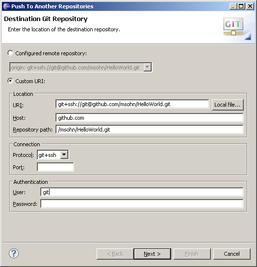
Push Ref Specifications
Click
Next
Click
Add all branches spec
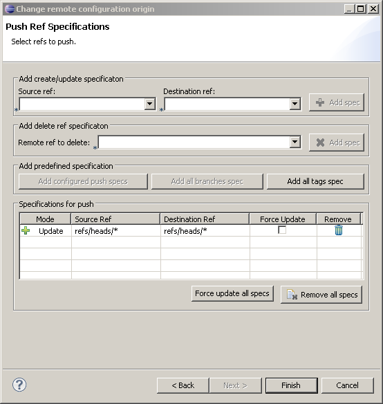
This is a convenient way to declare that you want to map your local branch names to the same branch names on the upstream repository you want to push changes to.
Click
Add all tags spec to map local tags 1:1 to tags in the repository you want to push to.
If you want to map local branches to those in the upstream repository in a different way you may define more detailed mapping specifications in the following way
- enter source and destination ref or select already existing branches from the drop-down lists
- click
Add spec
This will transfer the newly defined mapping to the list
Specifications for push
Other common push specs:
- You may e.g. map refs/heads/* to refs/heads/joe/* if you want to name the branches you push to according to your nickname
joe. This is useful if multiple users want to publish their local branches on personal branches in a jointly used public repository.
- Another usual mapping is to map the source ref HEAD to the destination refs/heads/master. This means you want to map your current HEAD (which might currently point e.g. to any local topic branch) to the upstream master branch.
Delete Ref Specifications
To delete a ref in the destination repository select the ref to be deleted from the drop-down list
Remote ref to delete
and click
Add spec. This will create a corresponding entry in the
Specifications for push list. Alternatively you may type in the specification for the refs to be deleted, this may also use wildcards. Pushing Delete Ref Specifications will delete the matching Refs in the destination repository.
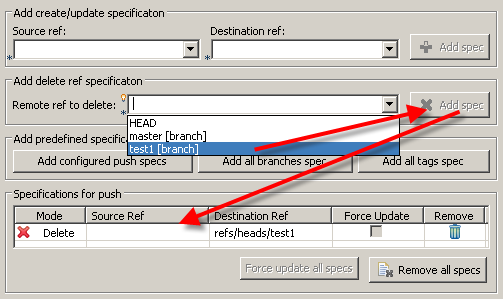
Conflicting Push Ref Specifications
If you add multiple conflicting Push Ref Specifications they will be marked in red, solve this by removing or editing the conflicting specs. It is also possible to edit the specs in-place in the list
Specifications for push
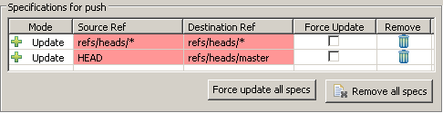
Push Confirmation
Click
Next
This will open the Push Confirmation dialog showing a preview which changes will be pushed to the destination repository.
If this does not match your expectation click
Back and correct your push specs accordingly.
- For ref updates the range of commits to be pushed will be shown in the format
<SHA1-from>..<SHA1-to> e.g.
d97f5a2e..adfdbfd2 means all commits between
d97f5a2e and
adfdbfd2 will be pushed.
- For refs which do not yet exist in the destination repository
[new branch] or
[new tag] is displayed.
- For refs which will be delete
[deleted] is shown.
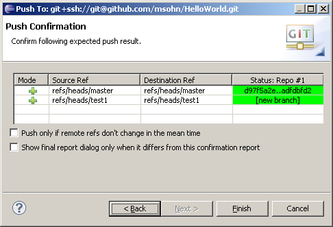
- Select the
Push only if remote refs don't change in the mean time check box if you want to be sure that what you see in this preview is also what you get when pushing these changes out.
- Select the
Show final report dialog only when it differs from this confirmation report check box if you only want to get a report after executing the push if the result differs from this preview.
Push Result Report
Click
Finish
Depending on the options you have chosen a push result report dialog is shown
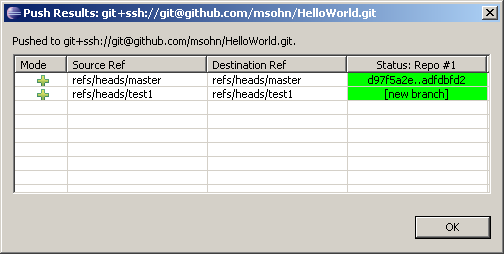
Click
Ok to close the dialog.
Example: Pushing a Local Repository to GitHub
Create Local Repository
Create Repository at GitHub
- create a new repository at GitHub

- you get a fresh clone URL for this new repository
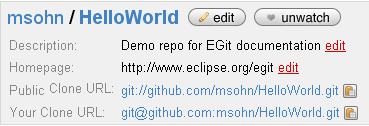
Eclipse SSH Configuration
- Click
Window > Preferences and ensure that your SSH2 home is configured correctly (usually this is ~/.ssh) and contains your SSH2 keys (upload your public key to your GitHub account settings)

- if you don't have SSH keys yet you may generate them on the second tab
Key Management of this dialog, use a good pass phrase to protect your private key, for more details see
"working with key passphrases"
Push Upstream
- Select your new Eclipse project and click
Team > Push....
- Enter
Your GitHub Clone URL and your GitHub password (with the free github accounts do not enter a password but leave this field blank), leave the user as git.

- Click
Next and on first connection accept GitHub's host key.
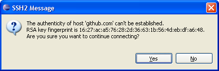
- Enter your SSH key's passphrase.

- Click
Add all branches spec to map your local branch names 1:1 to the same branch names in the destination repository.
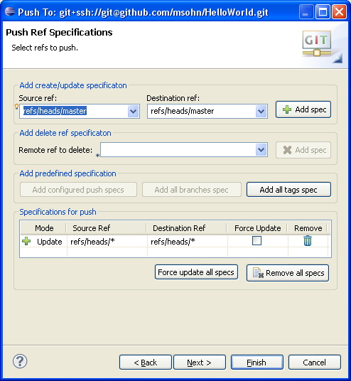
- Click
Next. The push confirmation dialog will show a preview of the changes that will be pushed to the destination repository.
- Click
Finish to confirm that you want to push these changes.

- The next dialog reports the result of the push operation.

- Point your browser at your GitHub repository to see that your new repository content has arrived

Fetching from other Repositories
Direct Fetch
The easiest way for fetching is to use
Direct Fetch Support on a Fetch Specification of a Remote.
Fetch Wizard
The other way is using the Fetch Wizard
Team > Fetch...
- If you already configured a Fetch Specification in the Repositories View you may also select it here using the drop-down list under
Configured remote repositories.
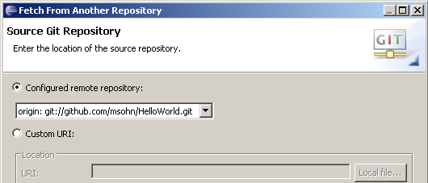
- Otherwise click
Custom URI and enter the URI of the upstream repository you want to fetch changes from.
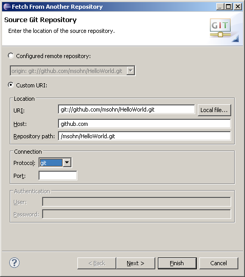
Fetch Ref Specifications
Click
Next
Click
Add all branches spec
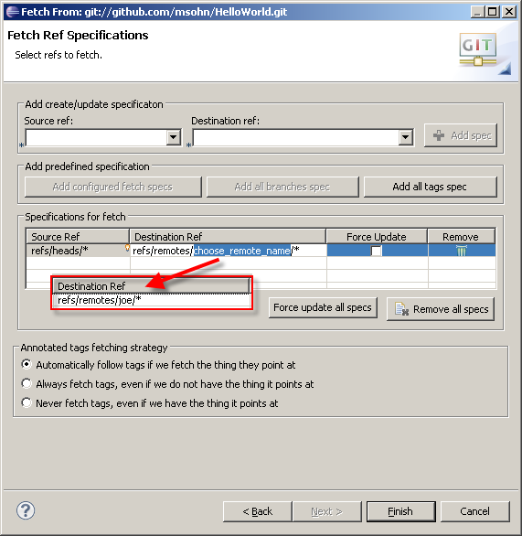
This is a convenient way to declare that you want to map the branch names in the upstream repository you want to fetch changes from 1:1 to the same local branch names.
- Click in the edit field
Destination Ref and replace the path segment
choose_remote_name with a symbolic name for the upstream repository you are going to fetch from.
- The default remote name for the repository your repository has been cloned from is
origin. The master of this remote maps by default from
refs/heads/master to
refs/remotes/origin/master.
- If you e.g. want to additionally track branches from Joe's repository in your local repository you would map the branch in his repository
refs/heads/* to the following tracking branches
refs/remotes/joe/*.
- Deselect
Force Update if you want to allow fast-forward updates only, select this option if you also want to allow non-fast-forward changes.
- Click
Force Update all Refs to set the force update option on all specs
- Click
Remove all specs to remove all specs from the list
Specifications for fetch
- Click
Add all tags spec to map tags tags in the repository you want to fetch from 1:1 to local tags.
If you want to map branches or tags in the upstream repository to local branches in a different way you may define more detailed mapping specifications in the following way
- enter source (ref in source repository) and destination ref (tracking branch or tag in local repository) or select already existing branches from the drop-down lists
- click
Add spec
This will transfer the newly defined mapping to the list
Specifications for fetch
Fetch Result Report
Click
Finish
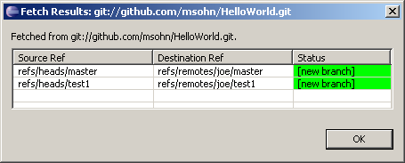
A fetch result dialog is shown.
- For ref updates the range of commits which have been fetched will be shown in the format
<SHA1-from>..<SHA1-to> e.g.
d97f5a2e..adfdbfd2 means all commits between
d97f5a2e and
adfdbfd2 have been fetched.
- For refs which didn't exist before in the local repository
[new branch] or
[new tag] is displayed.
- For refs which have been deleted
[deleted] is shown.
Pulling New Changes from Upstream Repositories
This is not yet fully available.
In cases where fast-forward merges are sufficient (full merge is not yet implemented) you may run pull in EGit in the following way:
Available alternatives currently include:
- run
git pull from outside eclipse (but
beware on Windows)
- if you did no local change or want to discard your local changes, use
Team > Reset...
|
|

|
|
| Starting from existing Git Repositories |
|
Inspecting the state of the Repository |